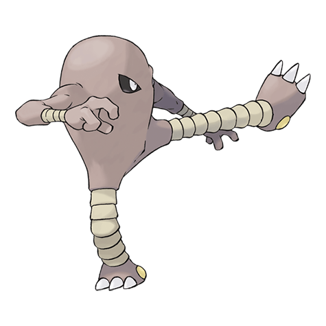

Назад
Хитмонли

Хитмонли — Покемон 1 поколения под номером 106 в Покедекс. Обитает он в регионе Канто и относится к Боявому типу. Ноги Хитмонли свободно сокращаются и растягиваются. Используя эту способность, он наносит сокрушительные удары противникам. После очередного боя этот Покемон потирает ноги и расслабляет мышцы, чтобы преодолеть усталость.
Тип:
Боявой
Эволюция
# 106 Хитмонли